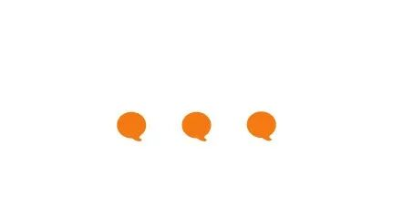
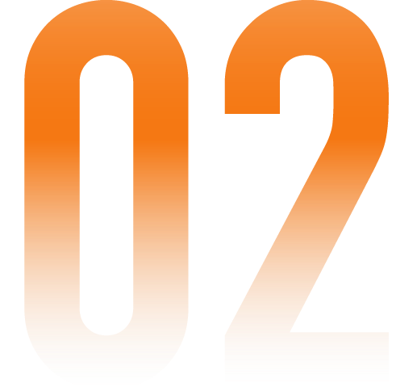

公司文化
-www.juzibot.com-

01 客户第一
帮客户达成他的业务目标，是所有事情的第一优先级 不代表客户说什么是什么，而是帮客户解决问题 呈现给客户我们的专业，而不是单纯的态度好
句子互动的未来是你创造的，所以你寻求的是什么对句子互动最好，而不是什么对你自己和你的小团队最好 主动发现问题，提出问题，并想办法去解决问题，敢于承担责任 为结果负责，关注任务的结果和产出，过程中遇到困难，想办法解决困难，努力做100分的交付
为情绪负责，能意识到自己的失控，能控制情绪，并主动处理和承担其带来的后果 负责任，能够勇于承认自己犯的错误，并能在下一次做的更好 当大家一起找最佳方案的时候，你没有那么多自我要维护，你不同意他人意见时并非出于公司政治的考量 就事论事，对事不对人
If it didn't happened on the document, it didn't happen 高质量交付，交付自己能力范围内的最好，最大程度减少不必要的沟通 拥抱一切在线协同工具，提高信息同步和协同的效率 尽可能分享所有相关的信息，能群聊不私聊
对所有事情保持理智的质疑，并敢于质疑 批判的同时，也同样给出自己的看法和建议 能够自我反思，虚心接受别人的建议，不管意见来自于谁
有问题先沟通解决，并且主动沟通 直截了当得表达自己的观点和想法，不隐藏，也不需要他人来猜 主动开放地分享知识和资讯，并愿意花时间帮助同事
快速学习且渴望学习，努力理解公司的战略、市场、用户和供应商 跳出思维定式去思考，发掘创新点 深入思考，不要浮于表面，挖掘问题背后的原因，从根本上解决问题 能明智地冒险，拥抱挑战

能够把一个事情拆分成有主次的3-5条说出来，内容要要主次
- 被客户骂了，能想清楚客户不满意的3条分别是什么(这里面的数字是虚数) - 系统宕机了，能想明白宕机的1-3个影响因素是什么(这里面的数字是虚数)
能基于能力 / 职责范围内要达成的任务 / 目标，拆解出对应的 Roadmap
- 当被提出需求的时候，拆解出来分别需要哪些人(产研 / 销售售后 / 客户自己）来配合并调动人来配合（而不是直接甩出来聊天记录当传声筒) - 当被分配任务的时候，拆解出来自己能做哪些事情，并能给出对应的 deadline
认同文档是最重要的信息传递方式并践行
开会之前写会议文档，严格践行“没有文档不开会” 重要会议结束之后要有会议总结文档
内容要有主次 能有逻辑且快速地吸收信息并写出文档
- 尽可能少说重复的内容，某些字或者词删掉意思不变的情况下，能删就删。尽可能简单 - 不要全篇都是heading，全是重点就没有重点 - 标题层级要划分清楚，需要展示在目录上的内容才放层级 - 标题要涵盖摘要，方便目录快速查找 - 所有放在文档中的文档必须是在线文档，并放在对应的公司文件夹下 - 尽可能用列表的方式展示内容，方便阅读 - 用 `1.` 而不是 `1、`
知道句子互动是干什么的 知道自己在做的事情是解决什么具体问题
- 开发知道自己在做的功能解决了什么问题，从问题导向去想怎么写代码 - 销售知道客户希望做的事情是为了解决什么问题，基于目 标想如何解决问题
会回答： 能够就事论事的回答问题，不要打太极 如果不能给出明确的“是”或“否”，可以给出： 1-10分，给出一个打分 第三种选择
- 问你什么时候能做完，能给出一个明确的时间 - 因为不愿意承认自己做错了而打太极
不懂就问：能够就是论事的提出自己的疑问
当觉得这件事有问题的时候，能直接逻辑清楚的表达出来。无论是在群里、私聊还是1V1的聊
学会做任务的拆解 能够主动跟踪任务的完成情况 有做复盘的能力